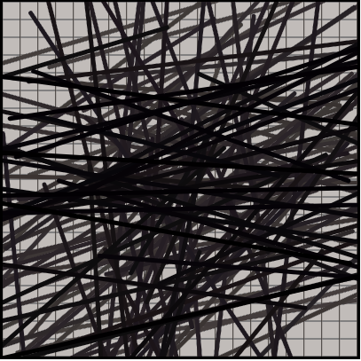

"Creation", Website
The piece "Sharp" is an exploration into how programming can lead the viewer to
create art through simple online interfaces. The user has the ability to change the piece
to satisfy their artistic desires. This is all an attempt to make the entrance to art
more accessible by showing the process can be as simple as pressing a few buttons and
seeing what happens.
Website
;